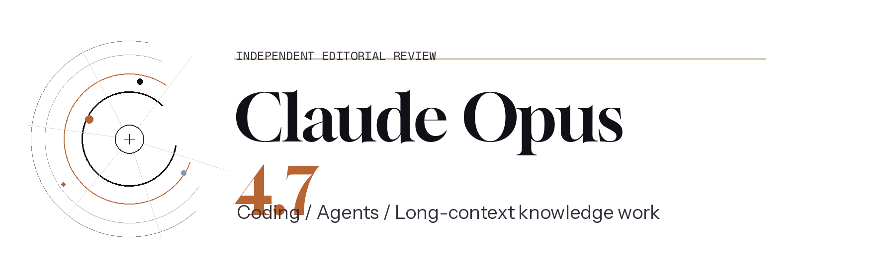
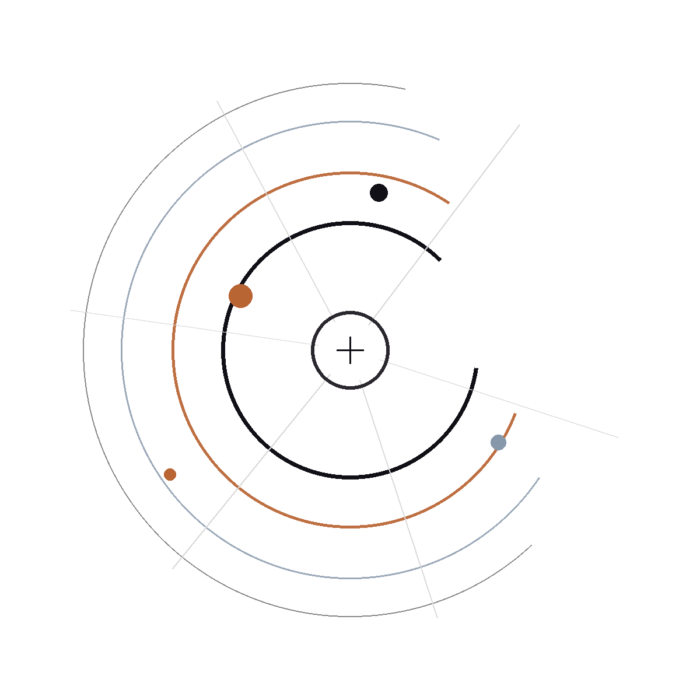

Context
1M
Long-context room for codebases, research packs, and multi-document review.

Independent Editorial Review
A premium Claude model aimed at the work that is expensive to get wrong: difficult coding, long-running AI agents, and high-context knowledge workflows.
This is an independent guide, not an official Anthropic website. Factual benchmark notes link back to official Anthropic materials.

Context
Long-context room for codebases, research packs, and multi-document review.
Strength
Positioned by Anthropic as a top-tier model for production-ready engineering work.
Fit
Built for multi-tool orchestration, memory across sessions, and long-running tasks.
Tradeoff
Best when accuracy and follow-through matter more than raw speed or lowest cost.
Editorial Positioning
Opus 4.7 looks strongest when a workflow has multiple dependencies, longer time horizons, or a steep cost of failure. It is less about fast chat turns and more about sustained decision quality.
01
Tasks with branching subtasks, validation loops, or many tool calls are where Opus 4.7 feels meaningfully different from faster default models.
02
Anthropic frames the model around production-ready code, larger codebases, and a stronger ability to catch its own mistakes during difficult implementation.
03
The model’s positioning around slides, docs, spreadsheets, and dense source material makes it a better fit for enterprise-grade reasoning than a general quick-answer tier.
Benchmark Notes
The official launch materials emphasize three ideas repeatedly: better coding follow-through, more consistent agentic execution, and stronger performance on long-context professional work.
If your day is mostly quick drafting, simple chat, or lightweight ideation, you likely do not need Opus 4.7. If your day involves difficult debugging, orchestration, or document-heavy synthesis, the premium tier makes more sense.
Read Anthropic’s Opus 4.7 product pageOfficial signal
Anthropic reports a 13% resolution lift over Opus 4.6, with four tasks solved that neither Opus 4.6 nor Sonnet 4.6 completed.
Official signal
Anthropic says Opus 4.7 tied for the top overall score at 0.715 and delivered its most consistent long-context performance in that internal benchmark.
Official signal
The product positioning explicitly highlights professional document creation, spreadsheets, slides, and multi-day workflows rather than only chat or search.
Editor Scorecard
These are editorial ratings for fit, not official scores. They are intended to help decide when the premium tier is justified.
9.6
Best fit when the work needs planning, self-correction, and reliable follow-through across multiple files.
9.4
Strongest case for Opus 4.7: multi-step execution, tool use, and work that has to keep going without hand-holding.
9.1
Particularly compelling for dense source material, review work, and long-context synthesis where precision matters.
7.0
For quick answers and lightweight drafting, a faster or cheaper model is usually the better economic choice.
Workflow Fit
Debugging race conditions, understanding unfamiliar repositories, or planning a non-trivial refactor where missing one dependency creates downstream regressions.
Operating tool-rich flows that need retries, validation, and memory across sessions instead of a single-shot answer.
Reviewing large evidence packs, policy docs, research notes, or enterprise materials where citation quality and nuance both matter.
Producing high-stakes writing, technical plans, or structured deliverables when correctness and polish matter more than latency.
Decision Heuristic
FAQ
Claude Opus 4.7 is best suited to difficult coding, multi-tool agent workflows, and document-heavy knowledge work where consistency is more valuable than low latency.
Yes. Anthropic presents Opus 4.7 as a hybrid reasoning model with a 1M context window, which is a major part of its value for long-context work.
Developers are a clear target audience, but Anthropic also positions the model for enterprise document work, spreadsheets, slides, and complex knowledge workflows.
Usually no. If the task is lightweight and disposable, a faster or cheaper model often makes better economic sense.
The official launch messaging emphasizes stronger coding, vision, and complex multi-step performance, with better consistency on difficult professional work than Opus 4.6.
Use Anthropic’s Claude Opus product page and linked model materials. This site summarizes them in editorial form and points back to the source for verification.